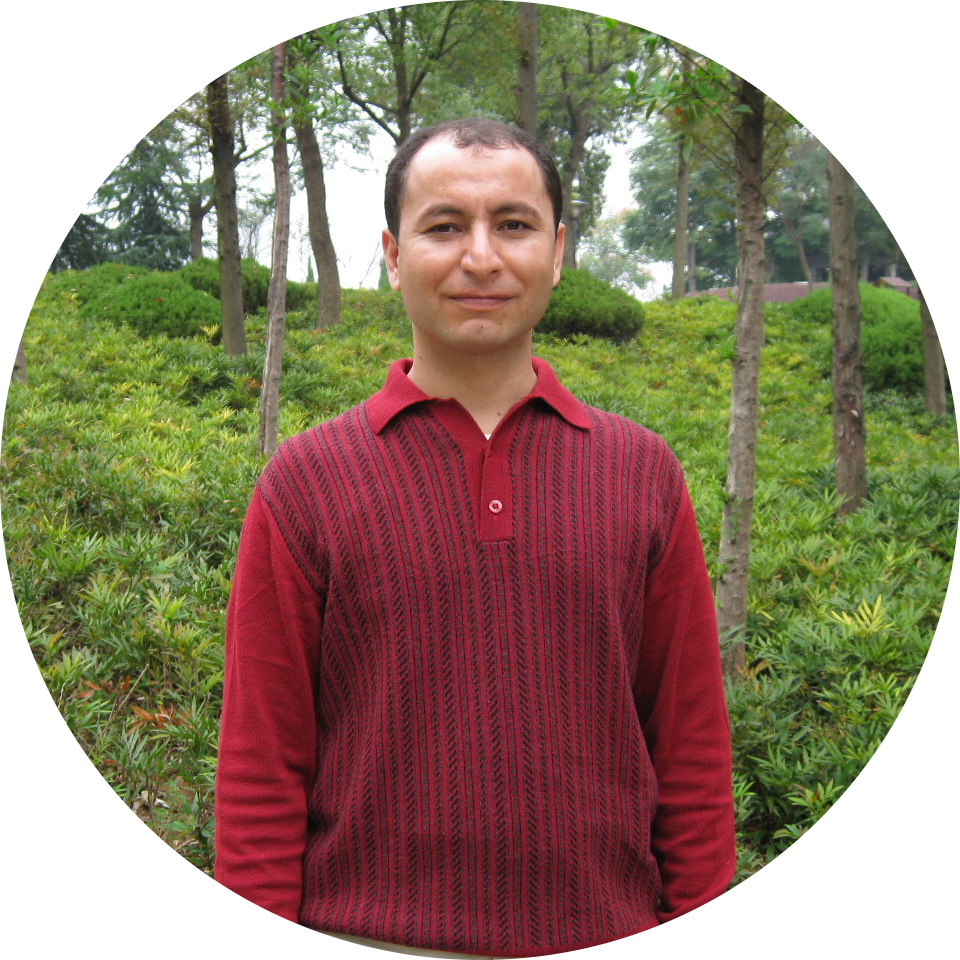

|  |
Dr. Ali Aydin
Peking University Professor
School of Foreign Languages
Amity College Illawarra Campus
I like cofee vey much
|
Professional Sammary
I am a teaching professional who believes in students’ abilities to learn and that they have an inherent thirst for knowledge
when they are in the right environment. I actively work to connect students to language and literature materials to enrich
their lives. I currently am a Language Teacher with two years of experience in teaching primary and secondary students
Turkish and Chinese Language. Previously, I was a Senior Lecturer with 9 years of experience teaching undergraduate and
graduate courses in Turkish Language and Literature. I have an extensive knowledge of linguistics, Chinese and Turkish
language and literature, as well as grammar conventions. I actively participate in continued learning through conferences and
professional research.The main research directions are the international communication and management of Chinese; the theory and method of international Chinese education.
Skills
- Language Skills: Fluent in English, Turkish, Chinese and Russian
- Demonstrated skills in developing and delivering educational programs
- Strong critical and analytical skills with reading, writing, and comprehension
- Teaching a curriculum development
- Research and experimentation
Education
Jul 2015 – Jul 2017 Postdoctoral Fellow
Peking University – School of Foreign Languages
Apr 2016 – May 2016 Master of Teaching
Fatih University Turkey Teaching, Application and Research Centre
- Awarded completion in Teaching Turkish as a Foreign Language Certificate Programme
Sep 2011 – Jul 2015 PhD in Linguistics and Applied Linguistics
Minzu University of China – School of International Education
- Chinese Government Excellent Foreign Student Scholarship
Sep 2009 – Sep 2011 MA in Chinese Language Pedagogy
Zhejiang Normal University – School of International Education
- Confucius Institute – Foreign Chinese Teacher Scholarship
Sep 2008 – Jul 2011 MA in Pure Mathematics
Zhejiang Normal University – College of Mathematics and Computer Science
- Chinese Government Excellent Foreign Student Scholarship
Sep 2005 – Jul 2008 BSc in Mathematics and Applied Mathematics
Zhejiang Normal University – School of Mathematics, Physics and Information Engineering
- Zhejiang Provincial Government’s Excellent International Students – First Place out 7,200 students
- Conferred Honorary Title of “Excellent International Student in Zhejiang”
Professional Work Experinces
Feb 2022 – present Amity College – Illawarra Campus
- Language teacher for Turkish and Chinese Studies
- Librarian for primary and secondary students
Nov 2016 – present Chinese Culture Translation and Studies Support
- Professional Translator in Turkish and Chinese Languages
Feb 2019 – Feb 2022 Amity College – Auburn Campus
- Language teacher for Turkish and Chinese Studies
- Librarian for primary and secondary students
Sep 2013 – Oct 2019 Peking University – Department of Arabic Language and Culture
- Tutor – Turkish Language and Culture/Turkish History
- Designed and established the inaugural Turkish Studies Minor (Sep 2013)
- Designed and established “Belt and Road” Turkish Public Course and Elective Course
- Lecturer on Turkish Studies
Sep 2015 – Oct 2019 Beijing Language and Culture University – School of Middle Eastern Studies
- Foreign Expert on Turkish Studies
- Founded the Turkish Research Centre (2017)
- The first Dean of the Turkish Studies Major (Sep 2015-Sep 2017)
- Designed and established the inaugural Turkish Studies Major (Sep 2015)
- Designed and established WeChat Social Media Platform “Turkish Concept” (Feb 2016)
- Lecturer on Turkish Studies
Aug 2017 – Sep 2018 Zhejiang International Studies University
- Designed and established the inaugural Turkish Studies Major at the School of Asian Languages and Culture
Jan 2016 – Dec 2019 Pangoal Institute
- Appointed Researcher at the Pangoal Institute, specialising in Turkish Studies
Jan 2013 – Mar 2014 “Invite 100 Chinese Experts and Scholars to Visit Turkey” Project
- Project Assistant to the Turkish Ministry of Culture (“Turkish Culture Year in China, 2013”)
- Group Leader – 100 Top Chinese Experts’ Visit to Turkey/Turkish Culture Scholars’ Visit to
Beijing
- Among 100 Top Chinese Experts was Mo Yan, Nobel Prize for Literature Recipient
Jun 2013 – Jun 2014 LOTUS Education & Cultural Organization
- Taught Mandarin Chinese in the Foreign Language Department
May 2011 – Sep 2013 Peking University – Institute for Advanced Humanistic Studies
- Research Assistant to Professor Tu Weiming, President of Institute for Advanced Humanistic
Studies
Professional Awards and Societies
Jun 2017 – Jun 2018 6th World Peace Forum – Tsinghua University, China
- Invited and accompanied the Former Foreign Minister for Turkey, Yasar Yakis
Dec 2016 Beijing Language and Culture University – China
- “Excellent Foreign Teacher” Award – For Excellence in Teaching
Mar 2015 Peking University– China
- Co-ordinator of Conference bringing together Turkish Government Officials to Peking University
Jun 2014 Peking University, School of Foreign Languages – China
- Group Leader to Five Students of Turkish Studies on Two-Week Cultural Exchange to Turkey
Nov 2013 China International Education Exhibition – China
- Assistant to Vice Chairman of the Turkish Higher Education Committee
Oct 2013 Peking University, National Exhibition Centre at the Library of the School of Foreign Languages
- Assistant to Cultural Counselor of the Turkish Embassy – Donation of 932 Latest Turkish Language Books
Oct 2013 Turkish Food Culture Festival – Shanghai Mart, China
- Presented a Speech to more than 300 Distinguished Turkish Guests including the Governor of
Bursa Province, Consul General of the Turkish Consulate General in Shanghai and the Chairman
of the China Chamber of Commerce in Turkey
Published Papers
- AYDIN ALI GURBUZ, “A Comparison of Word Order between Chinese and Turkish”. Chief Editor, Ding Shiqing, Zhou
Guoyan. Linguistics and applied linguistics research forum, The Minzu University Press, 2012, pp.108-122.
- AYDIN ALI GURBUZ, “Turkish students’ Chinese pronunciation errors and teaching strategies”, Journal of Hebei Radio
and TV University, Vol.1, 2012, pp. 47-51.
- AYDIN ALI GURBUZ, “Study on the Localization of Chinese Textbooks in Turkey”. Chief Editor, Wu Yinghui, Liu Yuping.
Proceedings of the Second Chinese Language International Communication Symposium, the Minzu University Press,
Nov 2013, pp. 20-27
- AYDIN ALI GURBUZ, “A Comparative Study of Turkish Idioms and Chinese Idioms”, Oriental Academic Forum, Vol.1,
2017, pp. 58—65.
- AYDIN ALI GURBUZ, “The Historical Role and Influence of the Ottoman Empire Foundation”, Social Science Forum,
Vol.3, 2017, pp. 199—204.
- AYDIN ALI GURBUZ, “The Enlightenment of Confucius and Jalal al-Din al-Rumi on the New Century: Based on the
Comparison of the Family’s View of Nature, Morality, and Ecology”, Journal of Baoding University, Vol.3, 2017, pp.
91—95.
Published Books and Chapters
- AYDIN ALI GURBUZ, A Speedy Course of Business Chinese, Hebei University Press, 2013.
- AYDIN ALI GURBUZ, Study on Chinese Education and Communication in Turkey：[D]. The Minzu University, 2014.
- AYDIN ALI GURBUZ, “Elegant and leisurely Turkey”, in Wu Bingbing, Yu Yunquan, ed., The Belt and Road: Case Studies
and Risk Management --- Culture, Ocean Publishing House, 2017.
- AYDIN ALI GURBUZ, An Overview of the History of Turkish Modern Education Development: Postdoctoral Outbound
Report.
- AYDIN ALI GURBUZ, Turkish Grammar Tutorial 1, Peking University Press, Oct, 2018
- AYDIN ALI GURBUZ, Pamuk and Contemporary Turkish Literature, in "Peking University Middle East Studies”, Social
Sciences Literature Press, 2018.
- AYDIN ALI GURBUZ, Pamuk and Contemporary Turkish Literature, in "Peking University Middle East Studies”, Social
Sciences Literature Press, 2018.
Academic Forus
- Attended the forum of American presidents of the Confucius Institute in Harbin, and delivered the paper “Turkish
students’ Chinese pronunciation errors and teaching strategies” (July 9, 2012)
- Attended the 2nd International Academic Conference on Chinese Language Communication and delivered the paper
“Localization of Chinese Textbooks in Turkey” (July 22, 2013)
- Attended the International Academic Symposium on the History of Chinese International Communication and
delivered the paper “Contrastive Analysis of Chinese Teaching in Turkey” (September 22, 2013)
- Attended the academic seminar of the Institute of World History of the Chinese Academy of Social Sciences on the
contemporary situation of Turkey, and delivered the paper “Description of Modern Turkey” (November 2013)
- Attended the “Turkish Food Culture Festival” held at the Shanghai Mart，and delivered the paper 《Blue Turkey》
at the meeting. October 6, 2013
- Attended the International Academic Conference on “The Ottoman Empire and Modern Turkey Studies” organized
by the Middle East Institute of Northwestern University, and delivered the paper “The Historical Role and Influence
of the Ottoman Empire Foundation” (May 17, 2014)
- Attended the founding conference of the Research Center for History and Social Policy of Peking University, namely
the first “History and Society” academic forum, and delivered the paper “Confucius and Jalal al-Din al-Rumi’s
inspiration for the new century - Based on a comparison of the family’s view of nature, morality, and ecology”
(November 16, 2014)
- Attended the International Symposium on “Intercultural Communication and Cultural Dialogue” in Peking University
and delivered a keynote speech titled “Reflections on Cross-Civilization Dialogue” (September 24, 2016)
- Attended the “Regional and Country Strategic Cooperation Forum” in Peking University and submitted an academic
paper (December 3, 2016
Language Skills
| Chinese |
⭐⭐⭐⭐⭐ |
| Russian |
⭐⭐⭐⭐⭐ |
| Turkish |
⭐⭐⭐⭐⭐ |
| English |
⭐⭐⭐⭐⭐ |
|
| Fangyan |
⭐⭐⭐⭐⭐ |
| Tuva |
⭐⭐⭐⭐⭐ |
| Shoaxin Fanyan |
✴️✴️✴️✴️✴️ |
| Arabic |
⭐⭐ |
|
My Hobbies
My Contact details